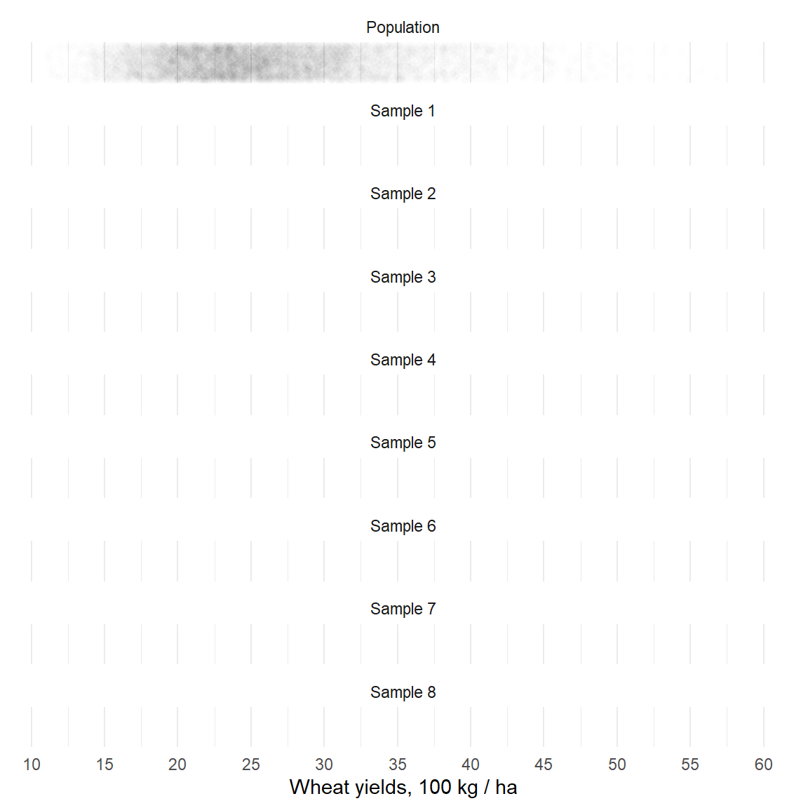
Week 01. Part 1. Introduction
Population and Sample. Description and Inference.
Justus Liebig University Giessen
Institute of Agricultural Policy and Market Research
The Population
- See: Ch. 1.3.3 Sampling from a population in (Diez et al. 2022)
The Population
“… is a natural, geographical, or political collection of people, animals, plants, or objects”
“… is the physical collection, … from which we derive a set of values or the variable of interest”
specific to our research question and the research design
defines the scope of out study, its external validity.
It is generally impossible to have data for the entire population
Source: (Dowdy et al. 2004).
The Sampling
See also book “Sampling” by (Thompson 2012)
The World Bank. Development Research in Practice (DIME) https://dimewiki.worldbank.org/Sampling
Simple Random Sample (1)
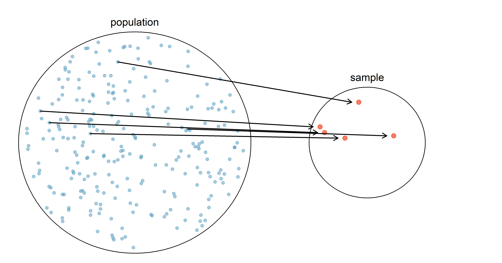
Source: OpenIntroStat/openintro-statistics, (Diez et al. 2022)
The Simple Random Sample (2)
Simple sample is a random subset of observations from a population.
- Random means that every observation from the population has an equal probability of being sampled.
Recall: What is the average wheat yield in 100 kg per ha?
How different our samples are going to be?
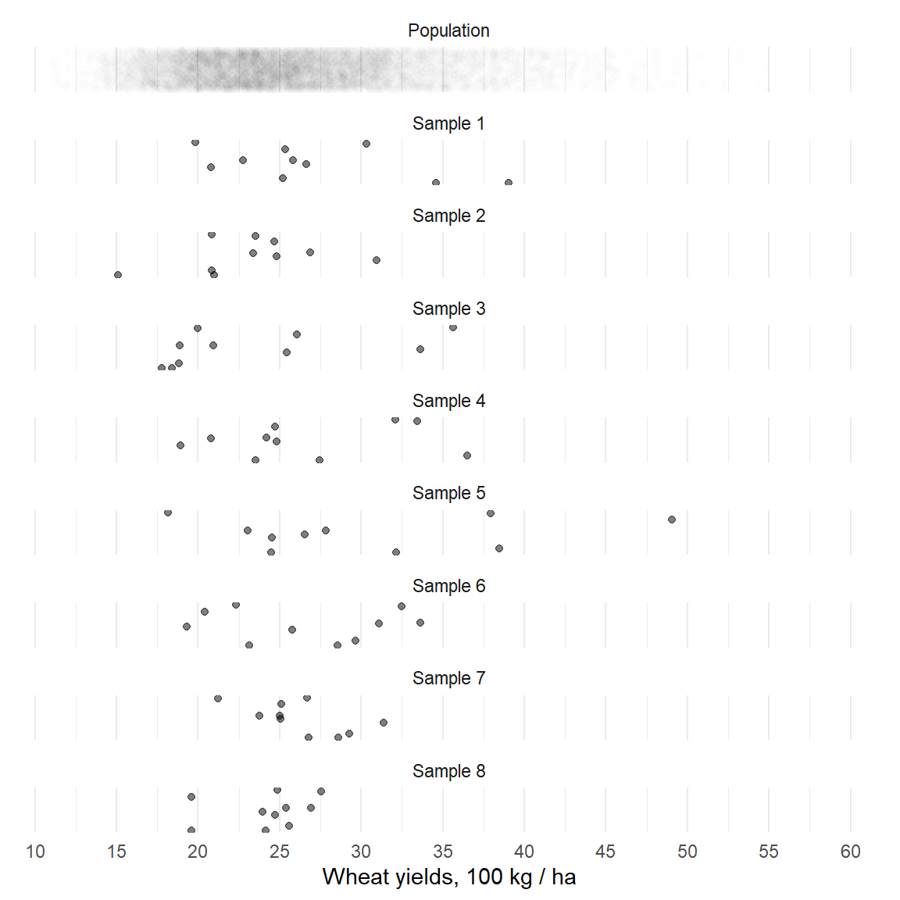
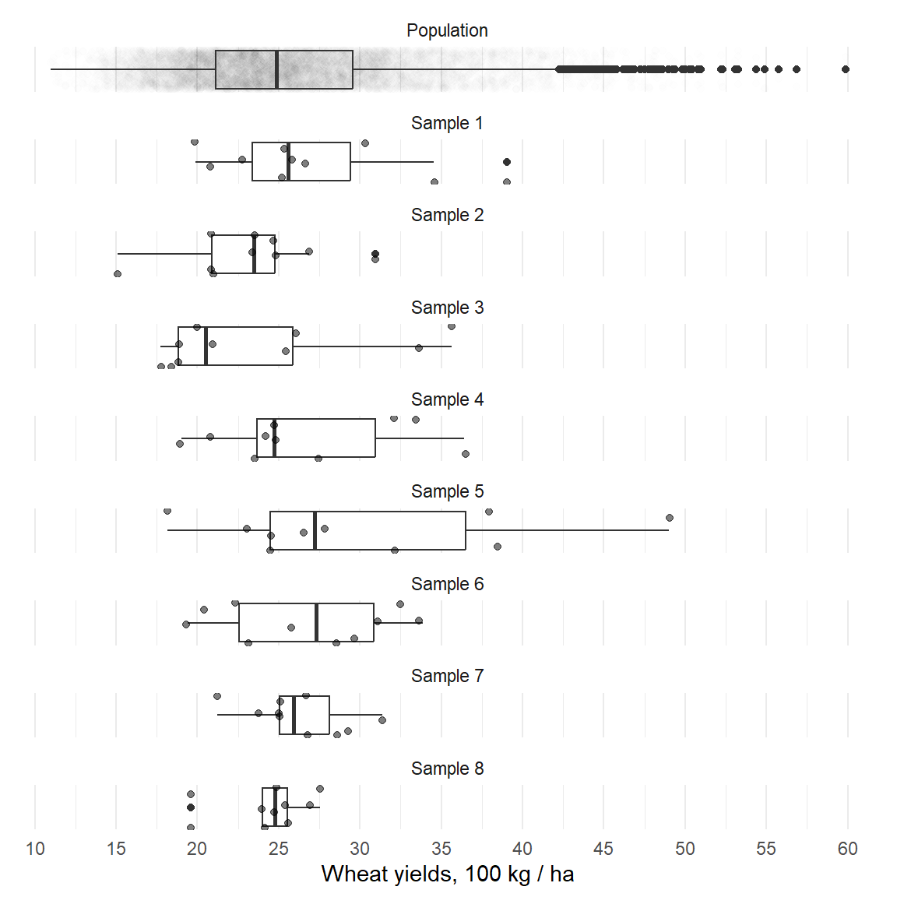
The Simple Random Sample (3)
Each sample results with a different estimate of the yields:
| Type | Yields |
|---|---|
| Sample 1 | 27.04 |
| Sample 2 | 23.19 |
| Sample 3 | 23.57 |
| Sample 4 | 26.66 |
| Sample 5 | 30.23 |
| Sample 6 | 26.68 |
| Sample 7 | 26.30 |
| Sample 8 | 24.23 |
What is “the correct” average yields?
Which sample estimates “the correct” average yield?
How to pick one?
Can we pick one?

The power of a random sample
If every sample is unique, why random sample is so important?
A random sample can approximate the population
- when its size (\(N\)) increases to infinity!
This is the Law of Large Numbers (LLN)
LLN makes random samples a powerful tool for understanding the population.
Law of Large Numbers: action
Let us gradually increase the sample size!
- What are the differences between samples?
| Type2 | Yields |
|---|---|
| Sample 1. N = 5 | 29.19 |
| Sample 2. N = 10 | 21.36 |
| Sample 3. N = 15 | 28.31 |
| Sample 4. N = 20 | 24.72 |
| Sample 5. N = 50 | 27.54 |
| Sample 6. N = 150 | 25.22 |
| Sample 7. N = 250 | 25.44 |
| Sample 8. N = 1000 | 25.48 |
With the increasing size, the sample becomes more similar to the population!

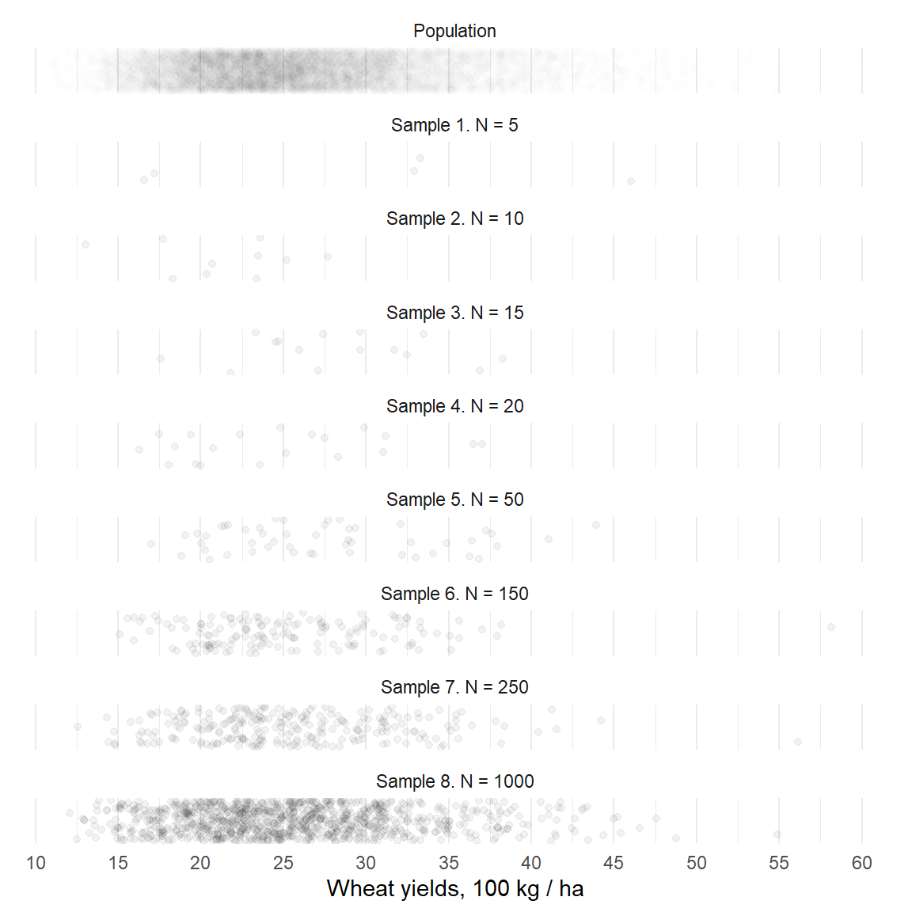
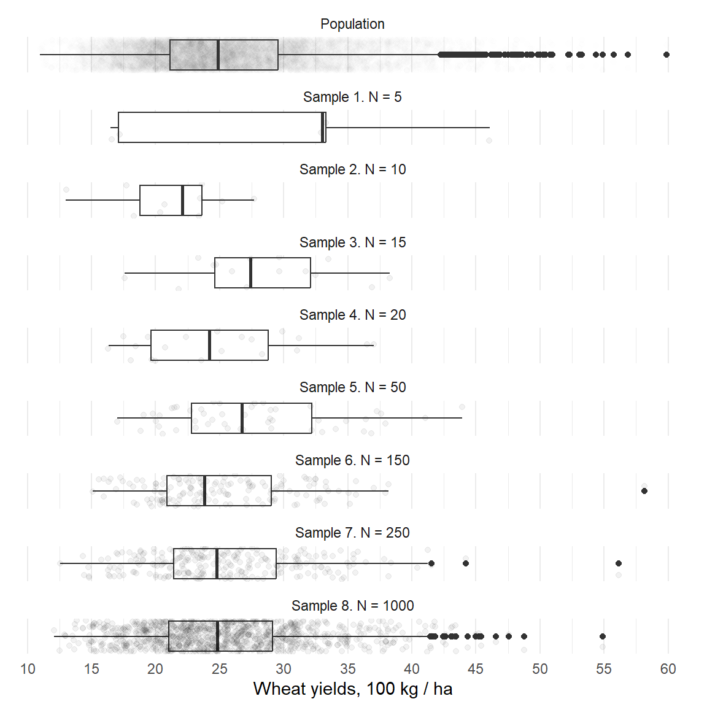
Law of Large Numbers: limitation
Sampling is costly: Larger sample size = larger expenses.
Each sample is still a random draw!
Can we be sure that our sample estimates the right average?
If a population has minorities, how accurately can a random sample represent them?
Solutions:
Apply appropriate sampling techniques: stratified and clustered sampling.
Embrace uncertainty and use inferential statistics.
Simple random sample limitations (1)
Desired sample
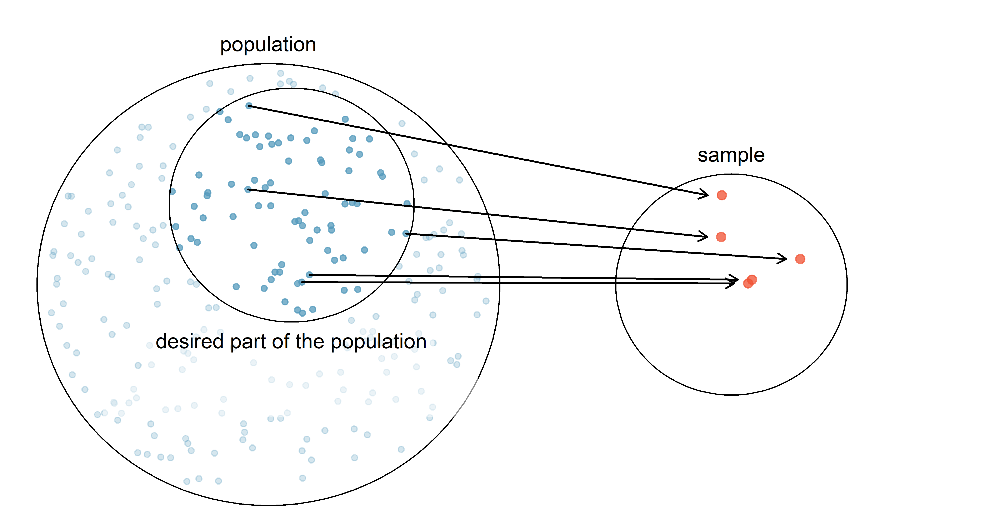
Source: OpenIntroStat/openintro-statistics (Diez et al. 2022)
Simple random sample limitations (2)
Actual sample
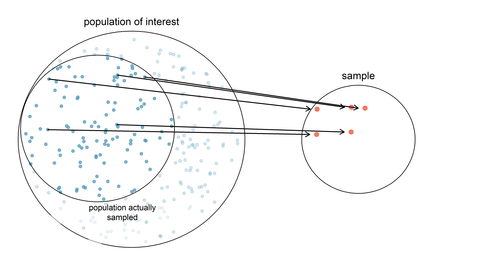
Source: OpenIntroStat/openintro-statistics (Diez et al. 2022)
Simple random sample limitations (3)
Key problems:
Underlining structures in the populaiton: strata / clusters.
No-response
Convenience-sample
- where individuals who are easily accessible are more likely to be included in the sample.
Under such limitations our sample is not representative or contains measurement errors.
Solutions:
Advanced sampling techniques
Those exist to balance between data quality and data collection costs.
- Simple, Stratified, Cluster, and Multistage sampling;
- Population-weighted sampling;
To learn more, see Sampling by (Thompson 2012)
Stratified sampling
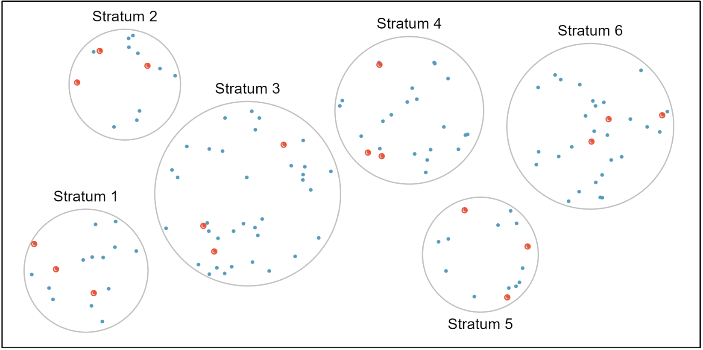
The population is divided into groups strata.
strata combines similar cases especially with respect to response variables;
within-strata: simple random sampling
Source: OpenIntroStat/openintro-statistics (Diez et al. 2022)
Cluster sampling
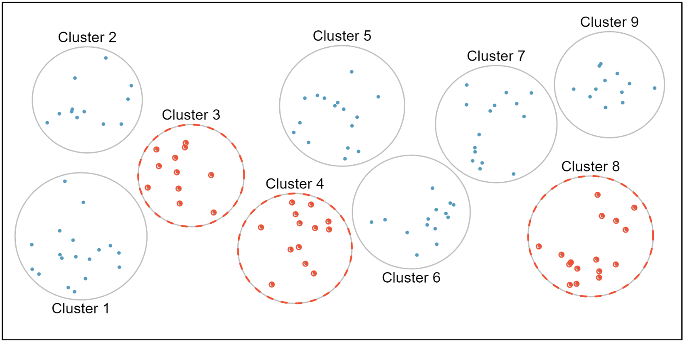
Population is broken into clusters (by location usually).
We randomly select several clusters and sample them completely.
Source: OpenIntroStat/openintro-statistics (Diez et al. 2022)
Multistage sampling
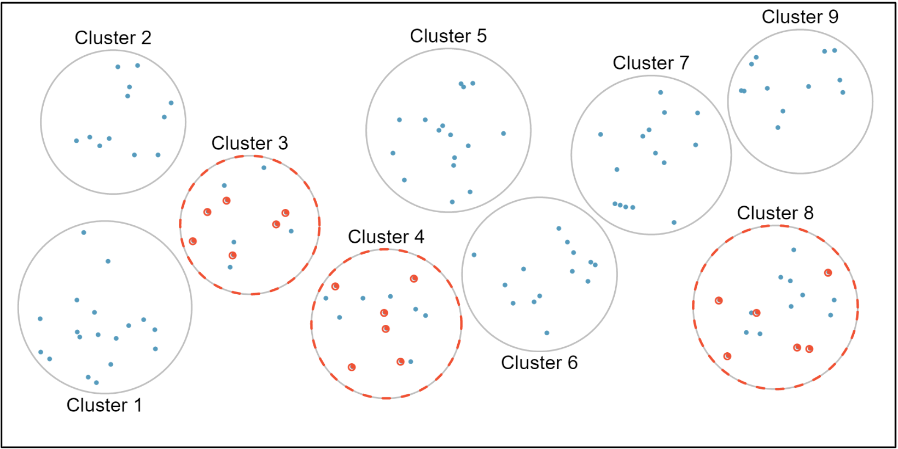
Cluster + satisfied sampling
Cluster + simple sampling
Source: OpenIntroStat/openintro-statistics (Diez et al. 2022)
Population and sampling: summary
Research objectives are to conclude about the population.
But the population is never available, instead we have RANDOM samples.
Random samples are all different: result with different estimates.
- Thus, descriptive statistics based on each sample is not identical to one based on the population.
Population and samples by research question
Discuss what are the (1) populations; (2) variables of interest; (3) data source; (4) sample based on the exemplary research questions below:
What is the average poverty headcount rate in the world/a country?
- Population: people or households;
- Sample examples: household surveys.
- Data source: The Living Standards Measurement Study (LSMS) https://www.worldbank.org/en/programs/lsms
At home: discuss the same for other research questions mentioned earlier.
- What is the average wheat yield in Hessen?
- How does access to education impact income inequality?
- What are the factors influencing malnutrition rates among children in a specific region?
- How does access to clean water and sanitation facilities impact child mortality rates?
- What are the barriers to accessing healthcare services among marginalized communities?
How to conclude about population using random samples and statics?
Any ideas?
There are:
- Descriptive statistics
- Inferential statisticsDescriptive statistics
AKA Data Analysis:
- uses statistical methods to described observed data (data that comes from samples)
But because each sample has a random component and is different from the population,
- descriptive statistics does not tell us much about the population…
Inferential statistics
Answers questions about the population using:
- random samples, and the probability theory
Does so by:
Establishing statistical hypothesis;
Using statistical methods and probability theory to reject of accept it.
The process of statistical inference
Source: (Dowdy et al. 2004)
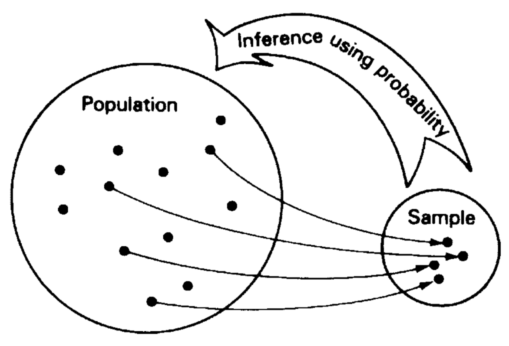
Statistical inference is based on statistical hypothesis testing (HT).
Statistical hypothesis: basics (1)
As we rely on a samples, we call any measure (mean, median, variance) computed based on such samples as:
- the estimates of {\(\text{mean}\), \(\text{median}\), \(\text{variance}\)}. We denote estimates with a “hat” “\(\widehat{\; \; \; \;}"\), for example: {\(\widehat{\text{mean}}\), \(\widehat{\text{median}}\), \(\widehat{\text{variance}}\)}
Based on a sample we can only calculate an estimate of a \(\widehat{\text{mean}}\), \(\widehat{\text{median}}\), \(\widehat{\text{variance}}\)
Statistical hypothesis: basics (2)
To infer that the true {\(\text{mean}\), \(\text{median}\), \(\text{variance}\)} in the population is not different from the estimate of {\(\widehat{\text{mean}}\), \(\widehat{\text{median}}\), \(\widehat{\text{variance}}\)}, we:
formulate two statistical hypothesis:
H0 (the null hypothesis):
- “The estimate of {…} is equal to ZERO in the population”.
H1 (the alternative hypothesis):
- “The estimate of {…} is NOT equal to zero in the population”.
Statistical hypothesis: basics (3)
use statistical tests and the probability theory to reject H0 (or fail to reject H0) and conclude either:
We reject H0 in favour of H1:
- with the probability \(P\) (p-value) that we’ve made a mistake by rejecting H0 (Type I error).
We accept H0 (fail to reject H0)
- because available data is insufficient to reject it;
- without implying that H0 is the right hypothesis (Type II error);
Goals of the Part 1: Quantitative Research Methods
Grasp the difference between description and inference.
Learn how to:
apply basic methods of descriptive statistics;
perform statistical inference;
make conclusions based on the results of statistical inference;
communicate our story using statistical tools;
Homework: Example of statistical inference in a research
Read through the examples
- Research question
- Research design
- Data collection
- Data analysis
Research question
Do extension services in agriculture improve rice yields in “a province” of Vietnam?
The population: all rice producers in “a province” of Vietnam.
The variables: rice yields in tons/ha and amount and quality of extension services received.
Research Design (simplified)
Randomized Control Trial (RCT) experiment:
Divide population into clusters and strata.
Clusters are similar in structure but are located in different places: villages
- Treatment group: 4 clusters with extension services.
- Control group: 4 clusters without such.
Same strata are present in each cluster: small, medium, and large farmers.
- Stratified Simple Random Sampling of 200 farmers in each cluster proportionally representing all strata.
Final sample size 1600 observations.
Data Collection: Two waves
Wave 1: pre-intervention
Exist to establish the baseline;
Establish the check and balance tables
- To ensure that on average, treatment and control groups are similar.
Wave 2: post-intervention
Exist to check the hypotheses.
Collects data on the variables of interest.
Data analysis
1 year after the treatment, we repeat data collection and measure rice yields:
Treatment group
Response rate: 1483
Rice yields: 6.0 tone per ha
Control group
Response rate: 1542
Rice yields: 5.8 tone per ha
Can we conclude extension services have a positive effect on the rice yields in Vietnam?
Let us see what rice yields looks like in the world: https://ourworldindata.org/grapher/rice-yields
To conclude about the effect of intervention, we need to
- “embrace” the uncertainty!
- perform statistical inference,
- consider Variance not only point-estimates.
Takeaways checklist
Homework
Important
Study all prerequisites on your own: see Ilias.
Familiarize with the World Bank DIME initiative https://www.worldbank.org/en/research/dime
And Dime knowledge base: https://www.worldbank.org/en/research/dime
Find one project on their website and try to understand what type of data collection was used there and how it was implemented.
Key concepts covered in the lecture
The population and a sample;
Simple Random Sample: (non-) representative sample, convenience sample, measurement error.
Other sampling technique: stratified, clustered and multistage sampling.
Descriptive statistics.
Inferential statistics.
Exemplary research design.
Example of the exam questions
Why do we need samples and random sampling?
Why random sampling is such a powerful tool?
When does random sampling fail?
What can descriptive statistics tell us about the population?
Why do we need inferential statistics?
When does simple random sampling fail?
What key random sampling techniques exist and why do we need them?
References
Diez, David, Mine Cetinkaya-Rundel, and Christopher D Barr. 2022. OpenIntro Statistics: Fourth Edition. OpenIntro. https://www.openintro.org/book/os/.
Dowdy, Shirley, Stanley Weardon, and Daniel Chilko. 2004. Statistics for Research. John Wiley & Sons, Inc. https://doi.org/10.1002/0471477435.
Thompson, Steven K. 2012. Sampling. John Wiley & Sons, Inc. https://doi.org/10.1002/9781118162934.

MK-068-EN (TM) WS2024/25. (c) Eduard Bukin